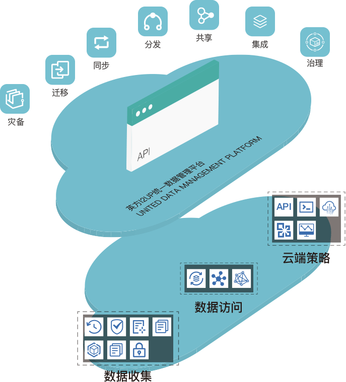

i2UP统一数据管理平台
United Data Management Platform
随着数字化、信息化技术的不断发展及广泛应用，数据已经成为了组织的核心资产，但一些分散的、孤立的数据并没有得到有效利用，导致整个IT系统进一步的臃肿和复杂。
为了解决这些数据管理难题，英方推出统一数据管理平台（i2UP）。i2UP包含了针对物理机、虚拟化及云端环境的数据监控、灾备、迁移、同步、分发、共享、集成、治理，归档等多维度大数据管理功能。可帮助客户实现高效率、智能化的数据管理工作，使一个软件操作界面，全面掌握企业信息生命线。
